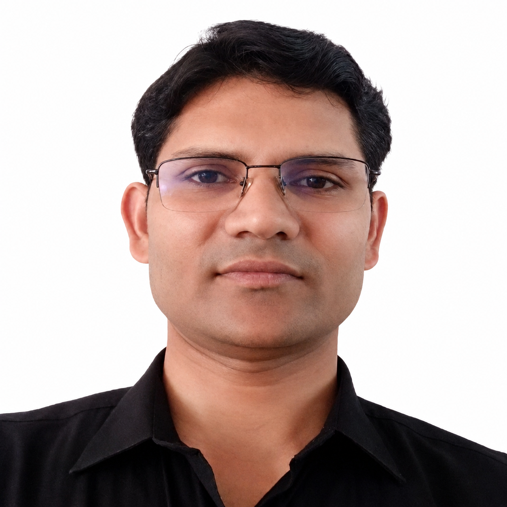

Dr. Sanoj Kumar
Senior Associate Professor
Data Science Cluster, School of Computer Science, UPES Dehradun, Uttarakhand, India
Profile
Dr. Sanoj Kumar is a Senior Associate Professor in the Data Science Cluster, SOCS, UPES Dehradun. His academic work connects applied mathematics, mathematical statistics, numerical analysis, optimization, digital image processing, computer vision, machine learning, and deep learning.
Education
Experience
- Mar 2026 - Till date: Senior Associate Professor, Data Science Cluster, SOCS, UPES Dehradun.
- Mar 2025 - Feb 2026: Associate Professor, Data Science Cluster, SOCS, UPES Dehradun.
- Jun 2023 - Feb 2025: Assistant Professor (Selection Grade), Data Science Cluster, SOCS, UPES Dehradun.
- Jan 2018 - May 2023: Assistant Professor (Selection Grade), Department of Mathematics, UPES Dehradun.
- Jan 2015 - Dec 2017: Assistant Professor (Senior Scale), Department of Mathematics, UPES Dehradun.
- Oct 2013 - Sep 2014: Postdoctoral Fellow, Department of Mathematics and Computer Science, University of Udine, Italy.
- 2008 - 2013: Teaching Assistant and MHRD Research Fellow, Department of Mathematics, IIT Roorkee.
- 2006 - 2008: Guest Lecturer, Department of Mathematics, MNNIT Allahabad.
Research Interests
- Mathematical Statistics, Numerical Analysis, and Optimization Techniques.
- Digital Image Processing, Computer Vision, Machine Learning, and Deep Learning.
- Medical image analysis, brain MRI segmentation, and uncertainty-aware deep learning.
- Image watermarking, reconstruction, texture classification, and visual surveillance.
- AI-driven mathematical modeling and healthcare applications.
Publications
- Brain MRI Segmentation using Deep Learning: A Review (Journal, 2026)
Rahul Pal, Sanoj Kumar, and Gaurav Bhatnagar. Neurocomputing (Elsevier). Impact Factor: 6.5. - Uncertainty-aware multi-class brain tumor segmentation using Bayesian U-Net variants (Journal, 2026)
Rahul Pal, Sanoj Kumar, and Gaurav Bhatnagar. Biomedical Physics & Engineering Express, 12(2), 025076. Impact Factor: 2.0. - Sequential Multimodal Biometric Authentication Fusion System (Journal, 2026)
Swati Rastogi, Sanoj Kumar, Musrrat Ali, and Abdul Rahaman Wahab Sait. Mathematics, 14(7), 1178. Impact Factor: 2.3. - Earthquake-Resilient Structural Control Using PSO-Based Fractional Order Controllers (Journal, 2025)
Sanoj Kumar, Harendra Pal Singh, Musrrat Ali, and Abdul Rahaman Wahab Sait. Fractal and Fractional, 9(12), 759. Impact Factor: 3.5. - Optimization-Driven Reconstruction of 3D Space Curves from Two Views Using NURBS (Journal, 2025)
Musrrat Ali, Deepika Saini, Sanoj Kumar, and Abdul Rahaman Wahab Sait. Mathematics, 13(14), 2256. Impact Factor: 2.3. - A Complex Network Analysis of Image Watermarking Scheme Based on SVD and DWT (Journal, 2024)
Manoj Kumar Singh, Sanoj Kumar, and Deepika Saini. SN Computer Science, 5(8), 1009. - Machine Learning-Based Stability Prediction and Analysis of Polypropylene Cu-MA Superhydrophobic Coating on the Aluminum Substrate (Journal, 2024)
Himanshu Prasad Mamgain, Rahul Pal, Sanoj Kumar, Ranjeet Brajpuriya, and Jitendra K Pandey. The Journal of Physical Chemistry C, 35, 2011-2022. Impact Factor: 3.3. - Topological analysis of image reconstruction based on polar complex exponential transform (Journal, 2024)
Manoj K. Singh, Deepika Saini, and Sanoj Kumar. Journal of Computational and Cognitive Engineering. - Unveiling anomalies: harnessing machine learning for detection and insights (Journal, 2024)
Shubh Gupta, Sanoj Kumar, Karan Singh, and Deepika Saini. Engineering Research Express, 6(3), 5215. Impact Factor: 1.5. - Inverse Geometric Reconstruction Based on MW-NURBS Curves (Journal, 2024)
Musrrat Ali, Deepika Saini, and Sanoj Kumar. Mathematics, 12(13), 2071. Impact Factor: 2.2. - Topological Data Analysis and Image Visibility Graph for Texture Classification (Journal, 2024)
Rahul C. Pal, Sanoj Kumar, and Manoj K. Singh. International Journal of System Assurance Engineering and Management. Impact Factor: 2.018. - Edge Computing Enabled Abnormal Activity Recognition for Visual Surveillance (Journal, 2024)
Musrrat Ali, Lakshay Goyal, CM Sharma, and Sanoj Kumar. Electronics, 13(2), 251. Impact Factor: 2.690. - A Robust Zero-Watermarking Scheme in Spatial Domain by Achieving Features Similar to Frequency Domain (Journal, 2024)
Musrrat Ali and Sanoj Kumar. Electronics, 13(2), 435. Impact Factor: 2.690. - Graph-and Machine-Learning-Based Texture Classification (Journal, 2023)
Musrrat Ali, Sanoj Kumar, Rahul Pal, Manoj K Singh, and Deepika Saini. Electronics, 12(22), 4626. Impact Factor: 2.690. - Comparative Study of Rough Set-Based FCM and K-Means Clustering for Tumor Segmentation from Brain MRI Images (Journal, 2023)
Pooja Singh, Neeru Rathee, Sunanda Sharda, and Sanoj Kumar. Revue d'Intelligence Artificielle, 37(4), 921-927. - A Blend of Analytical and Numerical Methods to Compute Orthogonal Image Moments over a Unit Disk (Journal, 2022)
Manoj K Singh, Sanoj Kumar, Gaurav Bhatnagar, Deepika Saini, Musrrat Ali, Chandra Mani Sharma, and Navel Sharma. Wireless Communications and Mobile Computing, Article ID 1344584. Impact Factor: 2.146. - A secure and robust stereo image encryption algorithm based on DCT and Schur decomposition (Journal, 2022)
Sanoj Kumar, Gaurav Bhatnagar, Girish Dobhal, Manoj K. Singh, and Deepika Saini. Journal of Information Technology Management, 14, 23-43. - Application of a novel image moment computation in X-ray and MRI image watermarking (Journal, 2021)
Manoj K. Singh, Sanoj Kumar, Musrrat Ali, and Deepika Saini. IET Image Processing, 11, 666-682. Impact Factor: 2.373. - Two View NURBS reconstruction based on GACO model (Journal, 2021)
Deepika Saini, Sanoj Kumar, Manoj K. Singh, and Musrrat Ali. Complex & Intelligent Systems, 7(5), 2329-2346. Impact Factor: 6.700. - An image watermarking framework based on PSO and FrQWT (Journal, 2021)
Sanoj Kumar, Manoj K. Singh, and Deepika Saini. Journal of Discrete Mathematical Sciences and Cryptography, 24(5), 1293-1308. Impact Factor: 0.68. - An Optimized Digital Watermarking Scheme Based on Invariant DC Coefficients in Spatial Domain (Journal, 2020)
Musrrat Ali, Chang Wook Ahn, Millie Pant, Sanoj Kumar, Manoj K. Singh, and Deepika Saini. Electronics, 9(9), 1428. Impact Factor: 2.690. - Dual Tree Fractional Quaternion Wavelet Transform for Disparity Estimation (Journal, 2014)
Sanoj Kumar, Sanjeev Kumar, Balasubramanian Raman, and N. Sukavanam. ISA Transactions, 53(2), 547-559. Impact Factor: 5.991. - Image Disparity Estimation using Fractional Dual-Tree Complex Wavelet Transform: A Multi-Scale Approach (Journal, 2013)
Sanoj Kumar, Sanjeev Kumar, Nagarajan Sukavanam, and Balasubramanian Raman. International Journal of Wavelets, Multiresolution and Information Processing, 11, 1350004. Impact Factor: 1.408. - Human Visual System and Segment-Based Disparity Estimation (Journal, 2013)
Sanoj Kumar, Sanjeev Kumar, Nagarajan Sukavanam, and Balasubramanian Raman. International Journal of Electronics and Communications, 67(5), 372-381. Impact Factor: 3.183. - Security of Stereo Images during Communication and Transmission (Journal, 2012)
Sanoj Kumar, Gaurav Bhatnagar, Balasubramanian Raman, and N. Sukavanam. Advanced Science Letters, 6, 173-179. - Uncertainty-Aware Brain Tumor Segmentation (Conference, 2025)
Rahul Pal, Sanoj Kumar, and Gaurav Bhatnagar. 2025 IEEE International Conference on Computer Vision and Machine Intelligence (CVMI). - Integrating Image Visibility Graph and Topological Data Analysis for Enhanced Texture Classification (Conference, 2024)
Rahul C. Pal, Sanoj Kumar, and Manoj K. Singh. International Conference on Soft Computing for Problem-Solving, Springer Nature Singapore. - A reversible and rotational invariant watermarking scheme using polar harmonic transforms (Conference, 2020)
Manoj K. Singh, Sanoj Kumar, Deepika Saini, and Gaurav Bhatnagar. Academia-Industry Consortium for Data Science (AICDS-2020). - A secure and robust stereo image encryption algorithm based on DCT and Schur decomposition (Conference, 2021)
Sanoj Kumar, Gaurav Bhatnagar, Girish Dobhal, Manoj K. Singh, and Deepika Saini. International Conference on Communication and Computing Systems (ICCCS-2021). - An image watermarking framework based on PSO and FrQWT (Conference, 2020)
Sanoj Kumar, Manoj K. Singh, and Deepika Saini. 2nd International Conference on Networks and Cryptology (NETCRYPT-2020). - A robust medical image watermarking framework based on SVD and DE in Integer DCT domain (Conference, 2020)
Sanoj Kumar, Manoj K. Singh, Musrrat Ali, and Deepika Saini. 2020 IEEE Sixth International Conference on Multimedia Big Data (BigMM). - Reconfiguration of PTZ Camera Network with minimum resolution (Conference, 2018)
Sanoj Kumar, Claudio Piciarelli, and Harendra Pal Singh. 4th International Conference on Harmony Search, Soft Computing and Applications (ICHSA 2018). - Histogram based Motion Estimation of Underwater Images (Conference, 2018)
Sanoj Kumar, Sanjeev Kumar, and Anuj Kumar. International Conference on Frontiers in Industrial and Applied Mathematics (FIAM 2018). - A Variational Approach for Optical Flow Estimation in Infra-Red or Thermal Images (Conference, 2013)
Sanoj Kumar, Sanjeev Kumar, and Balasubramanian Raman. Second International Conference on Image Information Processing (ICIIP-2013). - Optical flow Estimation using Fractional Quaternion Wavelet Transform (Conference, 2012)
Sanoj Kumar, Sanjeev Kumar, Nagarajan Sukavanam, and Balasubramanian Raman. International Conference on Industrial and Intelligent Information (ICIII-2012), Singapore. - Human Visual System and Wavelet transform based disparity estimation (Conference, 2011)
Sanoj Kumar, Nagarajan Sukavanam, Balasubramanian Raman, and Sanjeev Kumar. Fourth International Conference on Emerging Trends in Engineering and Technology (ICETET), Mauritius. - Disparity Estimation using Fractional Dual Tree Complex Wavelet Transform (Conference, 2011)
Sanoj Kumar, Sanjeev Kumar, Nagarajan Sukavanam, and Balasubramanian Raman. International Conference on Image Information Processing (ICIIP-2011). - Human Action Recognition in a Wide and Complex Environment (Conference, 2011)
Sanoj Kumar, Sanjeev Kumar, Balasubramanian Raman, and Nagarajan Sukavanam. Real-Time Image and Video Processing 2011, IS&T/SPIE Electronic Imaging.
Books And Book Chapters
- Edited book: Artificial Intelligence in Healthcare: Emphasis on Diabetes, Hypertension and Depression Management, CRC Press, 2024.
- Edited book: Artificial Intelligence Techniques in Mathematical Modeling and Optimization, CRC Press, 2025.
Book Chapters
- Introduction to AI-Driven Mathematical Modeling.
- Deep Learning Techniques From Training to Generalization.
- Future Trends and Emerging Technologies in AI Optimization.
- Depression Prediction Using Machine Learning Techniques.
- AI Chatbot for Depression Self-Help.
- Image watermarking with polar harmonic moments.
- SIE: An application to secure Stereo Images using Encryption.
Teaching
- Probability and Statistics
- Introduction to Data Science
- Digital Image Processing and Machine Vision
- Machine Learning
- Python Programming
- Applied Numerical Methods
Awards And Service
- GATE Mathematics qualified with All India Rank 201 in 2008.
- CSIR-UGC NET Mathematics qualified with All India Rank 112 in December 2009.
- IEEE membership, Institute of Electrical and Electronics Engineers, USA.
- Best Paper Award and Young Scientist Award, NETCRYPT 2020.
- Best Teachers Award, UPES 2023 and UPES 2024.
- Convenor for Deep Learning workshop, July 15-19, 2024, and Effective Pedagogy FDP, July 28-August 01, 2025.
- Session Co-Chair: CVIP 2016, ICHSA 2018, NETCRYPT 2020, ICCCS 2021, ICCSAI 2023, ICMLDE 2023, ICICCT 2024, ICMLDE 2025.
- Reviewer for ISA Transactions, Optical Engineering, Applied Mathematical Modelling, IET Image Processing, Mathematics, International Journal of System Assurance Engineering and Management, Symmetry, and Journal of Imaging.
Contact
- Email: sanoj.kumar@upes.ac.in, sanojdma@gmail.com
- Phone: +91 9058523010
- Office: Data Science Cluster, SOCS, UPES, Dehradun, India - 248007
- Address: Village and Post Manakpur Adampur, District Haridwar, Uttarakhand, India - 247668
- Personal: Nationality - Indian; Gender - Male; Marital Status - Married
- Software Exposure: Windows 7, 10, 11; C, C++, Python, Matlab, Mathematica; OpenCV; MS Office, LaTeX, SmartDraw